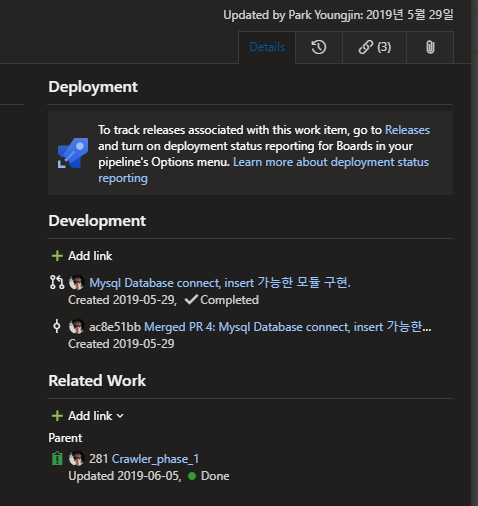
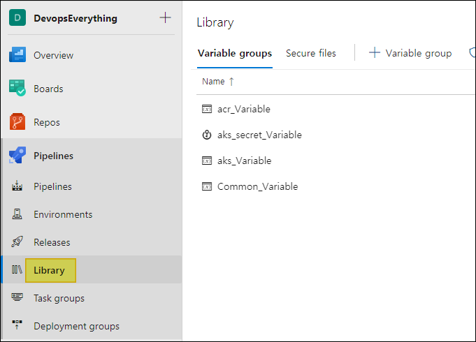

Azure Devops와 AKS배포 관리 1편 - 프로젝트 생성부터 Docker 이미지 빌드
목차
- Azure Devops, AKS란?
- 구현 목표
- Devops 구현
- Board
- Repo
- Build
- ACR(Azure Container Repository)
- Azure KeyVault
- Environment Variable
- 파이프라인 구성
Azure Devops 그리고 AKS
Azure Devops란?
Azure Devops는 아래와 같이 많은 기능들을 제공하고있다.
- Dashboard - 프로젝트의 전반적인 현황을 한눈에 볼 수 있다.
- Board - 에자일 방법론에 맞게 계획을 세우고 반복할 수있다.
- Wiki - 필요한 문서를 Markdown형식으로 쉽게 작성하고 저장할 수있는 공간을 제공한다.
- Repos - 소스코드를 관리 할 수있고 Git, TFVC 등을 제공하며, github과 연동이 가능하다.
- Pipelines - 배포, 빌드에 필요한 파이프라인 기능을 제공하며, 파이프라인에 필요한 변수, 배포환경과 패키지 등을 관리 할 수있다.
- Test plans - Code에 대한 Test 기능을 제공한다.
위 기능만 봐도 Devops 도구의 기능들이 대부분 포함되어 있다. 그리고 Azure Cloud와 쉽게 연동 할 수있도록 제공하고 있다. Azure Devops에서 Azure Cloud를 통해 어플리케이션을 배포하고 운영하게되면 Azure의 platform 의존성은 생기지만 학습이 쉽고 관리 포인트를 줄일 수있다. 그리고 개발, 배포, 테스트에 대한 주기가 짧아져 개발과 운영이 빨라지는 것을 기대할 수있다.
AKS(Azure Kubernetes Service) 란?
Kubernetes는 컨테이너 기반 어플리케이션과 네트워크 및 스토리지 구성 요소를 관리하는 오픈소스 플랫폼이다. 관리 작업을 위한 API들을 통해 선언적 배포 방식을 제공하고 자동화를 용이하게 한다. 어플리케이션의 가용성을 오케스트레이션하고 마이크로 서비스 기반 어플리케이션을 구축하고 실행 할 수있다.
AKS는 Azure에서 관리되는 Kubernetes 클러스터로 간단히 배포되며 상태 모니터링 및 유지 관리 같은 중요 작업을 처리해줌으로써 관리 복잡성 및 운영에 대한 부하를 줄여준다.
Azure Devops에서 Azure resource들에 대해 쉽게 통합할 수있도록 제공중이며, 충분히 관리와 운영이 가능하다. 그리고 AKS에 대해서는 어떻게 통합하고 관리하면 되는지 알아보기위해 직접 구현해보았다.
우선 어플리케이션에 따라 kubernetes는 배포 방법이 아주 다양하다. 여기서는 로그인 기능이 포함되어있는 간단한 Django 웹어플리케이션를 Azure Devops를 통해 AKS로 배포하고 얼마나 관리 및 운영이 가능한지 직접 알아보았다.
1편 구현 목표
- Azure Board 활용
- Azure Cli를 통해 필요한 Infra를 배포.
- 파이프라인에 필요한 환경변수를 저장하고, Azure KeyVault를 통한 Secret 활용.
- 파이프라인을 통해 소스코드를 빌드하고 Docker Image 생성.
Devops 구현
실제 프로젝트에서는 보드를 통해 제품의 백로그와 우선 순위를 관리하며, 레포지토리에 코드를 게시하여 협업하고 버전을 관리한다. Azure Devops에서는 어떻게 사용하면 되는지 간략하게 알아보도록하자.
Board
Devops에서 대시보드는 중요한 역할을한다. 프로젝트의 개발과 운영 과정을 하나의 대시보드로 관리하고 팀원들의 소통을 묶어주는 역할을 한다. Board에서 Work items를 통해 프로젝트에 필요한 목표 및 작업을 정의하고 우선순위에 맞게 진행된다. 업무의 티켓화를 통해 업무의 추적, 관리 또한 가능하고 티켓이 생성과 완료되면서 진행시간과 진행률 등을 Dashboard를 통해 볼수있도록 제공하고 있다.
Board의 프로세스는 프로젝트의 특성에 맞게 사용할 수 있도록 제공하고있다.
- Basic - 가장 기본적인 기능을 제공하며,
EpicsIssueTask의 티켓단위로 작업을 처리한다.- Agile - 에자일 프로세스를 기반으로 만들어져있으며,
EpicFeatureUserStoryBugIssueTask로 작업을 처리한다. Task Board에서Task와Bug로 작업을 추적한다.- Scrum - 스크럼 프로세스이며
Product backlog item(PBI)으로 backlog를 사용한다. Task Board에서PBI를 작업으로 분류한다.- CMMI - CMMI 프로세스이며
요구사항(Requirement)기준으로 작업을 처리한다.requirements,change requests,risk,review로 작업을 구분한다.
> Azure Devops Choose a process (Docs)
구현을 위해 Basic 프로세스로 생성하고, Issue, Task를 등록했다.
Repo
Repo는 소스코드 관리를 지원하고 있으며 Git과 TFVC를 제공하고있다.
Git repository를 생성하고, 프로젝트에 사용할 소스코드를 만들었다.

Board의 티켓에 Repo의 branch를 연결하고 이슈를 추적 및 관리 할 수있다.
지난 프로젝트에서 Task하나당 Branch 하나로 업무를 진행한 적이 있다. Pull Request로 팀원 혹은 팀장의 승인을 받으면 해당 Task는 자동으로 Done 상태로 변경되고 바로 다음 작업을 수행했다.
(참고) Commit 메세지에 task id를 적으면 자동으로 상태를 변경할수있다. 관련Docs

Task만으로 개발내용을 동시에 추적가능하고 상태를 자동으로 변경 할 수있다. 이러한 기능은 개발에 집중하는데 많은 도움이 된다.
Build
Azure Devops는 다양한 환경의 어플리케이션에 대해 빌드, 배포를 할 수있도록 지원하고 있다. Pipeline에서 어플리케이션을 빌드하고 배포하는 환경을 구성할 수 있다. 앞서 설명한 로그인 api가 포함된 간단한 웹어플리케이션에 대해 Docker를 빌드하고 저장소로 Image를 푸시하는 빌드 파이프라인을 구성했다.
ACR(Azure Container Registry)란?
Azure의 관리형 개인 Docker 컨테이너 이미지 스토리지
> 자세히
ACR 생성
Azure Portal의 Azure Cloud Shell을 사용하여 Azure Cotainer Registry(ACR)를 생성하고 Pipeline에 등록한다.
ACR_NAME=CMACR # ACR 이름 변수 지정
RESOURCE_GROUP=CM_Devops # 리소스 그룹 지정
REGION_NAME=koreacentral # ACR 리전 지정
az acr create \
--resource-group $RESOURCE_GROUP \
--location $REGION_NAME \
--name $ACR_NAME \
--sku Standard
Environment Variable
프로덕트를 개발하면서 환경변수 관리는 매우 중요하다. 어플리케이션의 환경변수, 자주 변경 인프라 정보부터 ID/PW 같은 민감한 정보가 포함된 값의 경우 소스코드 외부에서 별개로 관리 되는데, Azure Devops는 프로젝트 내에서 사용할 설정값들을 저장하고 사용할 수있도록 제공하고있다.

위 스크린샷처럼 Pipelines메뉴의 Library에서 Variable group안에 값을 생성할 수있다.
여기서 등록된 값들은 파이프라인에서 쉽게 사용할 수있으며, 유출되면 위험한 민감한 정보의 경우 Azure KeyVault와 연동해서 가져올 수있다.
Azure KeyVault란?
여러가지 종류의 Secret/Key 데이터를 저장하고 사용할 수있게 도와주는 Azure 서비스 중 하나이다.
> 자세히
앞서 ACR생성에 설정한 변수들은 파이프라인에서 사용하기위해 환경변수로 등록
Variable group을 생성하고 변수 등록 가능.

- Azure KeyVault에서
secret을 생성 후, 프로젝트와 연동함으로써 사용가능.

연동된 secret 값은 Azure Devops에서는 보이지않고
빌드시에도 secret은 *** 으로 Replace되어 보여진다.
Pipeline 구성
Devops의 핵심기능인 빌드 파이프라인을 구성해보자. Application의 Source code와 환경변수, Container Image storage(ACR)이 준비되어있다면 빌드 파이프라인을 구성할 수있다.
Kubernetes는 컨테이너 기반의 어플리케이션으로 작동한다. 따라서 빌드 파이프라인에는 Docker의 빌드와 ACR로의 Push가 필요하다.
파이프라인 구성은 아래와 같이 yaml로 직접 구성하거나,

아래와같이 에디터를 사용할 수있다.

두가지 방법 중 하나를 선택하고, Docker build and push가 있는 기본 템플릿을 찾아 설정하면 된다.
Container registry : 위에서 만든 ACR
Container repository : 이미지 repository 이름
Command : buildAndPush
Dockerfile : Git repo에서 Dockerfile 경로 ex) Application/Dockerfile
Build context : 빌드 경로 ex) Application
Tags : $(build.buildId)
latest
빌드 성공시 docker image가 성공적으로 ACR로 푸시 된것을 확인할 수있다.
Trigger
추가적으로 trigger를 통해 git branch의 변동사항에 대해 빌드 작동이 가능하다.
- Editor인 경우 trigger 항목에서 설정.
- yaml로 작성한 경우 아래와 같이 trigger 설정.
trigger:
- 'master'
정리
Devops 툴로 Azure Devops를 사용하여 Azure 서비스를 통해 어플리케이션을 빌드까지 해보았다. 프로덕트를 개발하는데 업무의 일정 관리 및 추적에 필요한 Board와 Git repository를 연동해 코드추적을 동시에 하고 그와 동시에 빌드 파이프라인을 자동으로 작동시켜보았다. 이정도의 셋팅으로도 개발자는 각자의 업무에만 집중할수 있도록 많은 도움을 준다. 그렇다면 배포관리와 인프라관리는 Azure Devops 어떻게 관리할 수있을까?
Docker image가 준비되었으니 kubernetes에 어플리케이션을 배포해보자.
다음 편에 계속…